Logging in
As soon as you have a DHL eCommerce account number, we will automatically create an account for My DHL Portal for you. You will receive an email containing your activation link. Use this link to create a password and set up your account. The activation link is valid for 48 hours. If your link has expired, you can request a new one via my.dhlparcel.nl by clicking Forgot password. After activation, you can always login via my.dhlparcel.nl. For the best user experience, we advice you to use Google Chrome.
Once you have logged in, you will see the dashboard. This is an overview of the most important elements of the shipping service. You can see which shipments are ready to send and which shipments require attention, and you can track and trace your shipments directly on the dashboard. Lastly, you can see which new features have been added to My DHL Portal. Click the pencil icon in the top right corner to choose which of these widgets you wish to see on the dashboard.
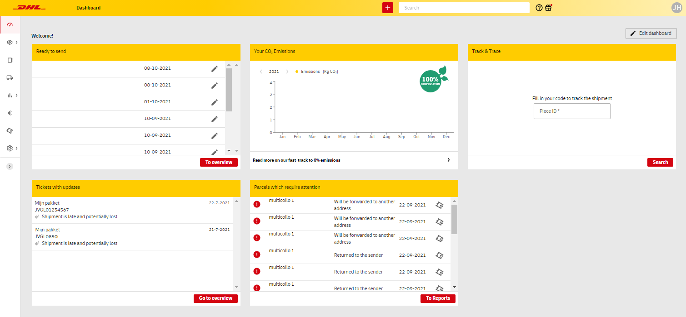
Default settings
When using My DHL Portal for the first time, you can apply several default settings to make sending packages and pallets much easier. To do this, go to the Settings screen in the left menu bar.
Default shipping addresses
To set an address as your default shipping address, it's important to have this address in your address book. Choose Address Book from the menu. Add an address using the red button.
Then, in the menu, choose Settings and go to Default Shipping Address at the bottom of the page. Select the address from your address book and the customer number you want to use in combination with this address. Click on the '+' to add the address as the default.
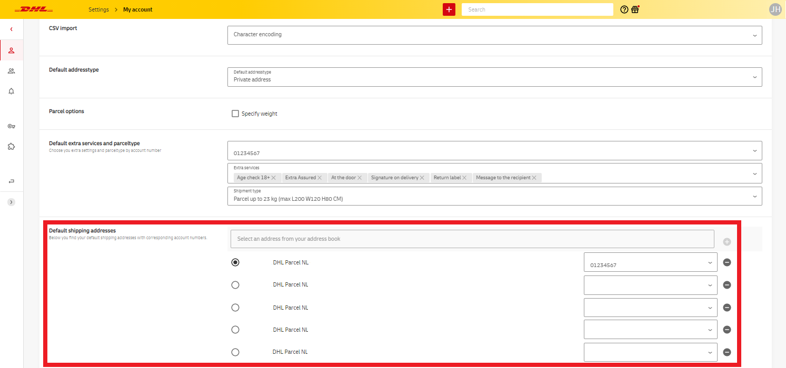
If you set up multiple shipping addresses, you can choose one address that is automatically selected when creating a new shipment. The other addresses you add here can be easily selected manually in the New Shipment screen.
Account number settings
Do you have multiple account numbers with DHL eCommerce? To distinguish them easily, you can add a name or identifier that will then be visible in various screens and reports within My DHL Portal. Under Settings, go to Account number settings, select your account number, and add a name.
In this screen, you can also set Default additional services for the respective account number. When creating a shipment, these services will be applied automatically (if possible). This is convenient if you frequently choose the same services.
Setting up a printer
In the Printer & Labels menu under Settings, you have various options for configuring your printer. The availability of these options depends on the printing method you intend to use.
Setting up a label printer
Select the option I want to print directly using a label printer. If you are using a Zebra brand label printer, you can enable the Use Zebra Printing Tool option to speed up the printing process. You will need to download and install the ZPL program first. Please note that the printing quality of PDF labels is generally higher than that of ZPL labels. Please contact support for more information (for Belgium customers, please use this form.
For your local printer settings, set the label size to 10 x 21 cm.
Tip: when configuring your label printer, create a preferred setting for a “DHL label” with the format 10 x 21 cm.
Using a regular printer
If you are using a regular printer, then select the option I do not use a label printer. This gives you two new options. Firstly, you can indicate how many labels you want to print per A4 page (up to three labels on one page). In addition, using the option Offer to choose label position, you can determine the position on the A4 page where the label will be printed if you choose to print fewer than three labels per page. You are offered this choice when you print a label for a New shipment.
It is important to choose the format landscape and the option actual size in your local printer settings.
Select the option Use automatic print if you want to display the print preview immediately when you click on the print button for a New shipment. If this option is disabled, labels will be downloaded as PDF files.
Creating a shipment
New shipment
In the menu, select Shipments and then New shipment.
If you have set multiple default shipping addresses, you can change the address by clicking on it in the yellow bar. In the dropdown menu, you can also click Customize to enter an entirely new shipping address.
Enter the recipient's details, either manually or from your address book. You can enter a business address or a private address, and you will immediately see the extra services available. Lastly, choose the shipment type and the number of parcels or pallets it consists of.
Once you have completed all the fields, save the recipient's address by checking the Save in address book box. For your next shipments, the information will now be filled in automatically when you search by company name, first name, or last name.
Lastly, print the label for this shipment using the red button in the bottom right corner. Your shipment is now listed in the Sent tab of the shipment overview. If the print button is greyed out, please check all mandatory fields including the Extra services panel.
Tip: want to book a pick-up? Don't forget to do this after creating your shipment(s). You can book a pick-up on the Book pick-up page.
Save or duplicate shipment
If you want to print several labels at the same time, or send your shipment at a later time, then save your shipment in Drafts by placing your mouse cursor over the print button and then clicking on the save button that appears (floppy disk icon). Select the shipments you wish to print and click Print label. Your shipping label can now be downloaded. You can also find your shipment in the Shipment overview.
You can also quickly duplicate a previously created shipment. Go to Sent Shipments or Archived Shipments and click on the shipment you want to duplicate. Then, in the top right corner, select New Shipment.
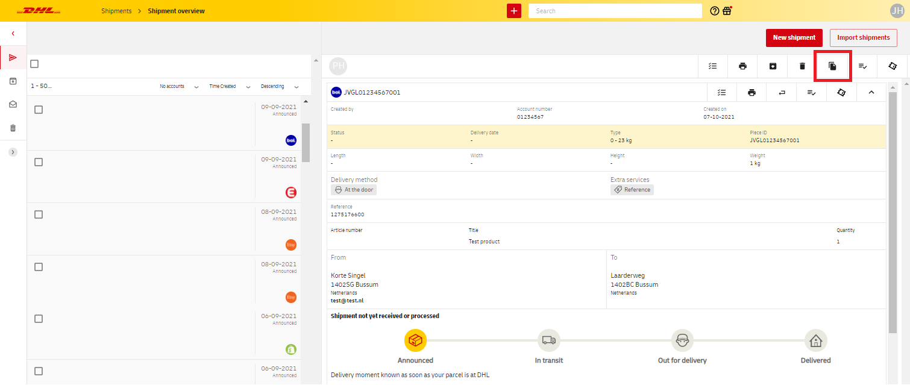
Tip: want to book a pick-up? Don't forget to do this after creating your shipment(s). You can book a pick-up on the Book pick-up page.
Delete shipment
You can archive shipments that you have created but do not want to send. Select the shipment(s) concerned and select Archive shipment in the menu. The shipment will then be removed from the Shipment overview list and can now be found in the Archived section. You can also move shipments to the Trash. Please note that it's not possible to clear trashed shipments.
Create customs invoices
If you are shipping to countries with customs clearance, you must include certain documents such as an original invoice. Read more about the requirements for such an invoice here.
The invoice can be created in My DHL Portal. When you select a country with customs clearance creating a New shipment, a button will appear at the bottom of the page that will lead you to the Customs form. You can use the description and total value fields to enter some information in advance. These values will be automatically filled in in the extensive form.
Starting the customs form, first choose if you are shipping a commercial or non-commercial shipment. Then choose an Export type and Export reason that best fits your shipment.
Use the next fields to select the correct Incoterms® and Incoterm city. Incoterms® define the terms and conditions that apply to the transaction between importer and exporter. The most common are Delivered At Place and Delivered Duty Paid (the latter is only possible when shipping to Switzerland). Find a list of Incoterms® and descriptions here.
Select the currency of the destination country. Use the fields below to enter information about the item you want to ship. You can use the yellow + button to add more items. Note that the minimal weight of your shipment should always be at least 1kg. The commodity code is a multi-digit code that is being used worldwide to classify products. Find a complete list of codes here or ask your supplier.
Use the Remarks field to add any additional information in English. Always add your VAT number and the receiver’s VAT number, and if possible your own invoice number and EORI number. Note that Swiss VAT numbers always end with “TVA” or “IVA”.
Finally, you can add additional customs documents. Click Back to go back to the New shipment screen if you want to edit the shipment information. Alternatively, you can click the red print button to print your label(s) and customs invoice immediately.
Tip: do you need to ship multiple items to the United Kingdom? Save time by using a template to quickly import product information.
Creating a return shipment
There are a couple of different ways to create a return label or booking. This makes the process of returning a shipment a lot easier for you and your recipients.
Option 1: Email return label for previously sent shipment
Does your recipient want to return a shipment? You can quickly create a return label by using the original shipment. Go to Shipment overview.
Select the shipment your recipient wants to return and click on Return email.
You now have two options. With Return Label you send a shipping label in PDF format, which your recipient can print and use to return the shipment. If you want to make it even easier for your recipient, choose QR code. This allows you to send an email with a QR code, which can be used to return the shipment at a DHL ServicePoint without a shipping label. Your recipient will find all the necessary instructions in this email.
Please note: return with shipping label is not possible for all countries. Ask your account manager for more information. Returns with QR code are only possible in or from the Netherlands.
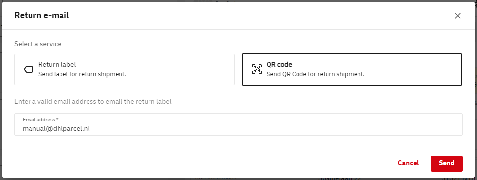
Option 2: Creating a return label manually
This option is only available within the Benelux. Easily create a return label by using an alternative shipper address and entering your own address details as shipping address. To use an alternative shipper address, click the arrow to expand the Shipper section and view the additional input fields.
Quick tip: do you want to book a pick-up? Don't forget to do this after creating your shipment(s). You can book a pick-up on the Book pick-up page.
Option 3: Return label for a new shipment
If you want your recipient to be able to return your shipment right away, you can do so by enclosing a return label. This return label is created automatically if you select the extra service Return label when creating a shipment.
This means you will be creating two labels: one to actually ship your parcel and one to enclose for your recipient to use. This option is not available for all countries. Please contact your account manager for more information.
Option 4: Book a pick up with return label
This option is only available within the Benelux. Do you want a DHL courier to pick up a return shipment and bring a label? Go to Pick-ups and click Book pick-up.
Choose a pick up address, select your account number from the dropdown, choose a pick-up date and fill in the shipment details. If you want the courier to bring a label, use the final section Send/Return to to fill in your own address details. You can either pick an address from your address book or expand the section to fill in a new address.
Lastly, click Book pick-up to complete your booking.
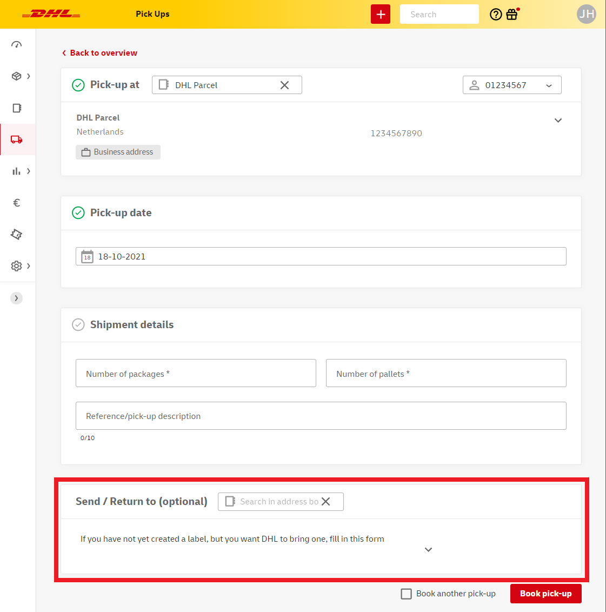
A final option to streamline your return shipment flow is to create a return portal. For more information see this section of the manual.
Booking a pick-up
Go to Pick-ups and click Book pick-up*.
Choose a pick up address (within the Benelux), select your account number from the dropdown, choose a pick-up date and fill in the shipment details. You can either pick an address from your address book or expand the section to fill in a new address. If needed you can add a reference for the courier, for instance to give some information about the pick-up location. You need to use the Send/Return to section only in case you want the courier to bring a label.
Lastly, click Book pick-up to complete your booking.
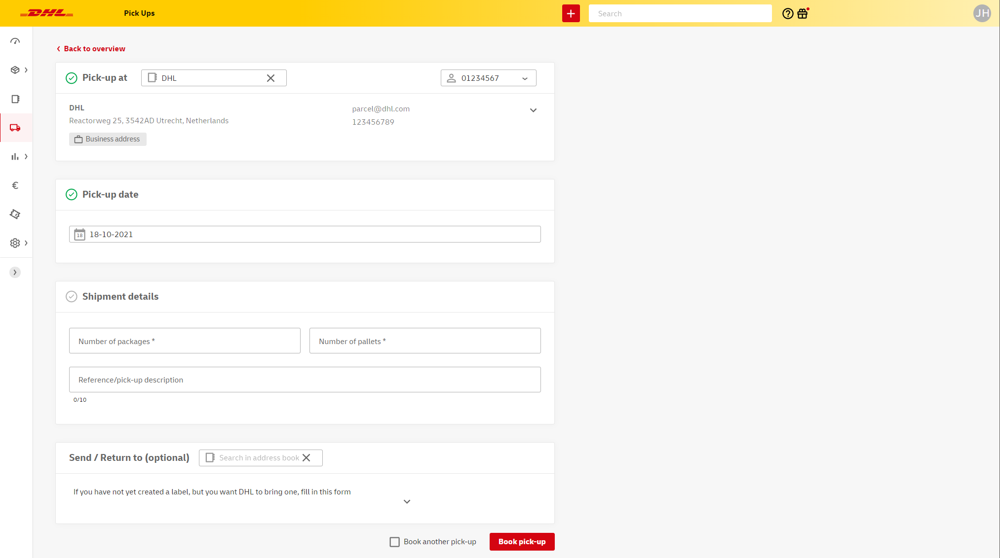
Note: you only need to book one pick-up per day. This means it is not necessary to book more than one pick-up if you plan to ship multiple parcels and/or pallets from the same address on the same day.
* It is possible to set up a scheduled pick-up (please contact your account manager for more information). If you have a scheduled pick-up, you don't need to book a pick-up in My DHL Portal. If you need an incidental pick-up on another address, you can still book these in My DHL Portal.
Pick-up overview
In the Pick-ups window you will find an overview of your booked pick-ups. Among others, pick-up numbers, planned dates and pick-up adresses are listed here. The shipping address is only visible if you have chosen to book a pick-up with label.
You can use this window to easily book the same pick-up multiple times. To do this, click the icon in the Actions column. This brings you to a new pick-up form which has already been filled in as much as possible. The only thing left to do is to check the pick-up details and to click Book pick-up.
Lastly, you can export the pick-up overview to a CSV file by using the Download csv button.
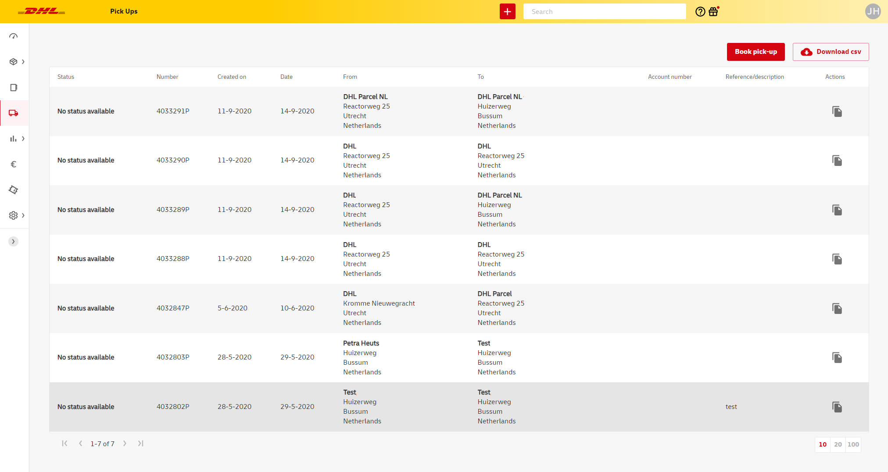
Importing data
If you need to send a large amount of shipments to various addresses, booking these shipments one by one in My DHL Portal may be time-consuming. Importing address or shipment data from an existing file can speed up this process.
Address data
Download the template for addresses. Use the template to create your address list and save it as a TXT or CSV file (comma delimited). All columns are required except for company name 2, box and phone number. Company name is required only if you plan to ship a bussiness shipment to the address.
Go to your Address book and click Import addresses in the top right corner of your screen.
Select and name your address file. Use the dropdown menus to match the file columns to the correct fields in My DHL Portal. After doing this once, you can select previously saved schemes to avoid having to match all columns with every import.
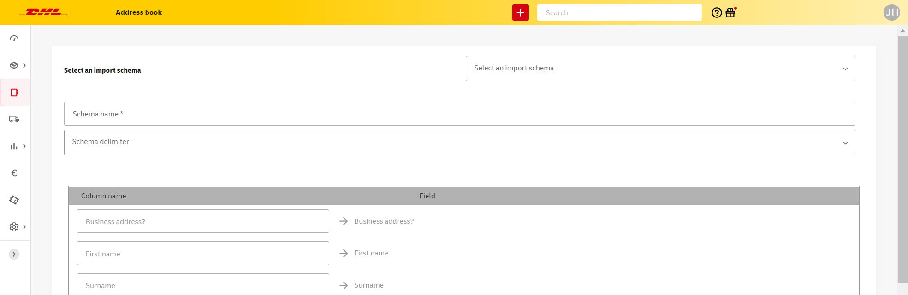
After completing your import, you will find your addresses in your Address book. Here you can add or edit addresses individually if needed.
Shipment data
Download the template for shipments. Use the template to create your shipment list and save it as a TXT or CSV file (comma delimited). To see which fields are required, hover your cursor over the column headers. In some cases this will also give you some more information about the different fields.
Go to Shipments and click Import shipments in the top right corner of your screen. Select and name your shipment file. Use the dropdown menus to match the file columns to the correct fields in My DHL Portal. Note: in case of error messages for certain columns (e.g. extra services), it's important to enter a '0' (off) or '1' (on) in the entire column. After matching all columns once, you can select previously saved schemes to avoid having to match all columns with every import.
It's also possible to use your own template, but be careful to match all required columns to the correct fields. To do this, adjust the dropdown(s) in the left column from column to fixed value. Using this method it's possible to add all options to your import.
Tip: do you want to share your created templates with colleagues who have their own My DHL Portal account? Please contact us for support (for Belgium customers, use this form).
You can also add extra services by default.
After completing your import, you will find your shipments in the Drafts section.
From here you can select the shipments and start printing labels. You can always add more shipments by using the New shipment button.
Tip: in the Settings menu you can select the correct character encoding in the CSV import section.
Product data
When you ship multiple items to the UK, you can easily import information about these items when creating your customs documents.
Download the template for importing articles in My DHL Portal. Add your items in the template and save the file as a txt or csv file (comma delimited). All columns are required.
When creating your shipment to the United Kingdom, you will be able to edit the Extended customs form. When you open this form, you will see the Import items button in the Describe your shipment section. Use this button to upload your txt or csv file. Then click Next and select Skip first line. You will now see your articles in the overview.
Follow your shipment with track and trace
From the Shipments menu, go to the Shipment overview. Here you can track all your shipments by clicking on them and if needed, expand details for more information. It's also possible to download or email a proof of delivery from the shipment view.
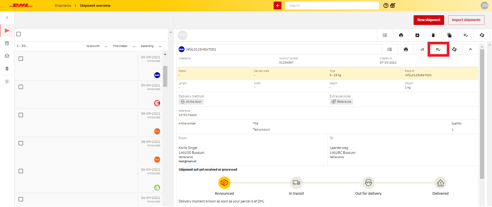
To easily track multiple shipments it's best to use the Shipments report. Another way to quickly find specific shipments is to use the Search bar at the top of the screen.
If you have any questions about a shipment, please contact customer service or create a ticket in My DHL Portal.
Reports
Shipment report
Click Reports in the menu and go to Shipments. First, select one or more account numbers and a time period of which you would like to see all shipments. You will now automatically get an overview of your shipments, including shipment number, shipping and delivery dates or latest status.
By using the All filters button you can refine your search and see shipments that have a specific status or destination. You will only see the filters for which shipments are available within your selection. When you've selected your filters, press Apply filters to view your shipments. To disable active filters, click Restore.
Click Download xlsx, CSV or PDF to export your data. In case you opt to download a CSV file, see this quick guide (Dutch) about converting your data to seperated columns. As long as your file is not too large, you can also export to an Excel file.
Incoming shipments
In the Incoming shipments report you will find all shipments that on their way too you. This report contains return shipments and other DHL shipments that are addressed to the email address of your My DHL Portal account. You can add more email addresses via Settings. Note: shipments that are sent to your address but for which your email address was not entered, will not appear in this report.
You can use filters to see shipments from a selected time period or addressed to a specific email address, or use the search bar to look up shipments. Click Download xlsx, CSV or PDF to export your data.
Shipment details
By clicking on a specific shipment in one of the Reports, you will be able to see detailed information about this shipment. Here you will see all statuses and specifications of the parcel or pallet. In addition to the create ticket button, you also have the option to download the Shipment status here.
Tip: Actions such as creating a ticket or downloading a shipment status can also be done directly from the overview screen. You can do this by clicking the three dots in the rightmost column, called Actions.
Daily report
You can download a daily report of your My DHL Portal shipments by going to Day report via Reports.
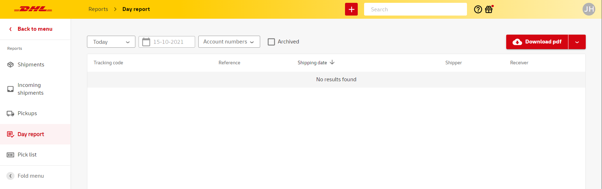
Select the desired date and click Download xlsx, CSV or PDF to export your data. Note: a shipment will only appear in this report as long as it's listed in your Shipment overview.
GoGreen report
In the GoGreen report, you can see how much CO2 has been offset by the shipments you have sent. Use the filters at the top to narrow down the data by year, customer number, and destination, for more specific information. Hover your mouse over the green bars to see exact values.

In this screen, on the right, you can also download your annual GoGreen Confirmation and (after the end of the respective year) your SGS-validated GoGreen certificate.
Contacting customer support
If you have any questions about a shipment, you can quickly create a ticket in My DHL Portal. This way, all necessary shipment details are shared automatically with our customer service. You'll also have an overview of your current tickets and their status at all times. You can create a ticket in the following two ways.
About a shipment
From the dashboard, go to Shipments and Shipment overview. Select the shipment you want to contact customer service about and click the Open new ticket button. If your shipment contains multiple pieces, click the Open new ticket button for the piece you have a question about.
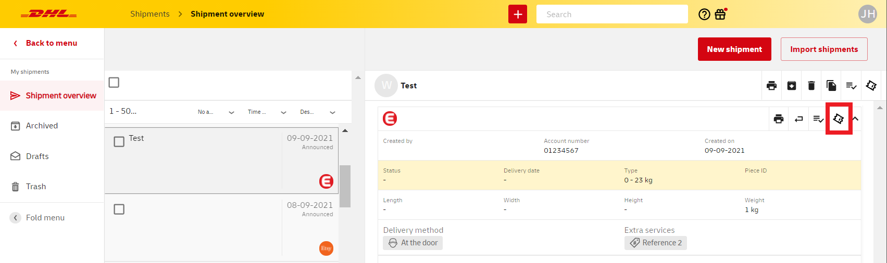
You will now see a form. First, select the reason for your ticket and add as much information as you can about your shipment. Adding as much details as possible will help our customer service greatly in performing an investigation. Note: if you shipped to a consumer outside of the Benelux using our Parcel Connect service, please attach the invoice to your ticket.
Using reports
Alternatively, you can create a ticket for our customer service using the Shipments report. From the menu, go to Reports and Shipments. Select the shipment you want to contact customer service about and click the Open new ticket button. If your shipment contains multiple pieces, click the Open new ticket button for the piece you have a question about.

You will now see a form. First, select the reason for your ticket and add as much information as you can about your shipment. Adding as much details as possible will help our customer service greatly in performing an investigation. Note: if you shipped to a consumer outside of the Benelux using our Parcel Connect service, please attach the invoice to your ticket.
Ticket overview
To see a list of your created tickets and their status, use the main menu to go to the Tickets window.
In case you want your customer service tickets to be visible to your colleagues using their own My DHL Portal accounts, please contact Sales Support via parcelsales.utrecht@dhl.com (for Belgium customers, please conact parcelbe.salessme@dhl.com).
New delivery instructions
Sometimes delivery of a shipment may not be possible, at which point the shipment will be temporarily placed at one of our DHL locations. In case of shipments to businesses you can use the Shipments report in My DHL Portal to communicate your delivery instructions for these shipments. If you do not pass on your new instructions, the shipment will be returned to the shipper after 10 days.
To quickly find shipments that need new delivery instructions, use the Attention filter within the Shipment report. Now click the icon in the Attention column to give new instructions for a specific shipment.
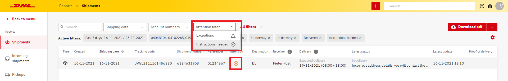
Use the form to tell us what to do with your shipment. If you would like us to attempt a delivery on a new date, that date can be a maximum of two months in the future. At the bottom of the form you see the number of days left to submit your instructions.
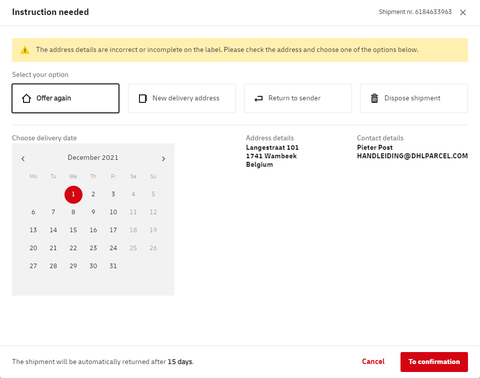
User management
Using the main menu, go to Settings and click User management.
Click Add to add new users to your account. The user overview can also be used to set user rights and select account numbers per user. User roles determine what actions can be performed or what data can be viewed in My DHL Portal by certain users. To edit user roles and other settings, click the three dots in the Options column and select Edit.
In My DHL Portal the following user roles can be set:
- Basic user: This default role gives the user rights to view shipments, pick-ups, address book items and return portal pages. This user can also set a logo via Settings, to personalize email notifications to customers.
- Shipments Manager: this role gives the user permission to:
- create, import, copy, archive, delete shipments and returns
- book and copy pick-ups
- add, edit, import and delete address book items
- view and edit various default shipment settings
- create, edit, (de)activate and delete return pages
- User Manager: this role gives the user access to the User management settings page, to manage other users and their roles within the same organization.
- Reporting Manager: this role gives the user access to the Reporting section, to make use of all the underlying reports. Additionally, this role gives access to the 'Your CO₂ Emissions' widget on the dashboard.
- Support Ticket User: this role gives the user access to the Tickets functionality, in order to create and view tickets for our support teams.
- Rate Manager: this role gives the user access to the Rates section, to view the rates per account number.
- API Gateway User: this role gives the user access to the API keys settings page, to generate API keys in order to integrate with our API Gateway.
Note: you can add a new user only once. Did you delete a user by accident? Please contact us (for Belgium customers, please use this form.
Creating a return portal
If you want to provide your customers with a service that enables them to create their own return shipments, you can setup a return portal and put the link on your own website or in your email notifications. This not only improves customer experience but also optimizes your own return process.
Use the main menu to go to Settings and Return pages. Click the Add new return page to start creating your portal.
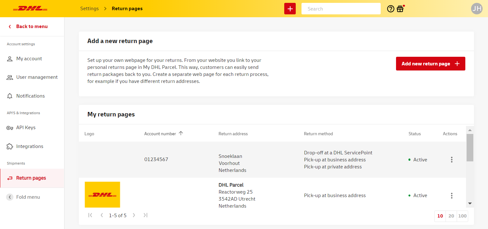
Use the form to first set the return address. In most cases this would be your own address. Next, select the account number that should be used for booking the return shipments and upload your company logo. This logo will appear in the return portal to make the webpage easily recognizable to your customers.
Finally, select the return methodes that will be offered within the portal. You can select multiple methods, in which case your customer will select their preferred option when they create a return shipment. In case of a pick-up at a consumer or bussiness address, your customer can select the date and time that suits their needs and our courier will bring the label. Note: not every return method is available in the entire Benelux. The form shows the available countries for every method.

Click Create return portal. Your page will now be listed in the return pages overview. Using the button Actions column you can (de)activate, edit or copy the URL of your page to put on your website.
Rates
If your user account has sufficient rights (see User management for more info) you can use the Rates section in My DHL Portal to see the tariffs that apply to your account number(s). Use filters to quickly see your rates for different recipient types, shipment types or countries of destination. If there are rates that will be active in the future, e.g. in case you start using a new product, you will find those rates by checking the Show future rates box.
You can export your rates to an Excel or PDF file by clicking the Download button in the upper right corner of your screen.
Other settings
Personalised email notifications
If the email address of a recipient is known, for instance because you entered the email when creating a shipment, we will keep the recipient informed about their delivery with email notifications. You can personalize these notifications by adding your company logo.
To do this, go to Notifications in the Settings menu.
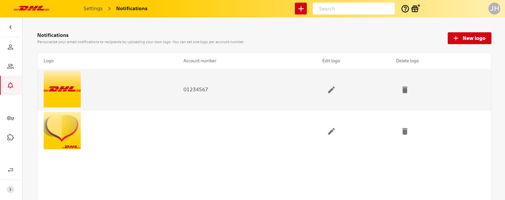
Click New logo in the upper right corner. Use the pop-up window to select the account number you wish to set a company logo for. Email notifications about shipments that are created with this account number will contain the logo, even if they are not created using My DHL Portal. Click Browse to select and upload an image. For logos it's usually true that quality is highest if the file is in PNG format, and the size doesn't exceed 100x100 pixels. Use the selection tool to mark the correct cutout and click Submit when you are done.
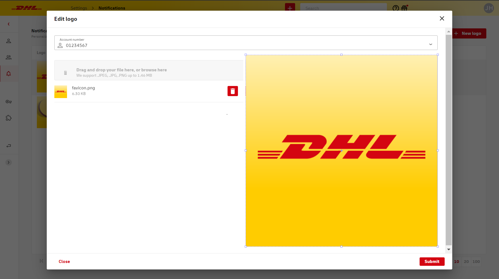